-
Figured I'd share my findings when I test fit another style intake manifold on my LSX swapped Z31. The intake manifold I test fit in this thread is a LSX EFI Edelbrock Vic Jr. that is accompanied by a Aarons 6061 elbow "low profile type". The elbow almost clears the factory hood. It's about 13/16in too tall. Please not I used Dirty Dingo LSX Z31 swap mounts to install my engine. There's several ways you could make up the 13/16in of clearance needed. The easiest would be modify the hood to clear the elbow. Another avenue is lowering the engine by using custom engine mounts and modified oil pan. The list of ways to make it fit are endless. I made this thread to help people visualize the use of another style of intake manifold on a LSX while installed in a Z31. Here's some pics.
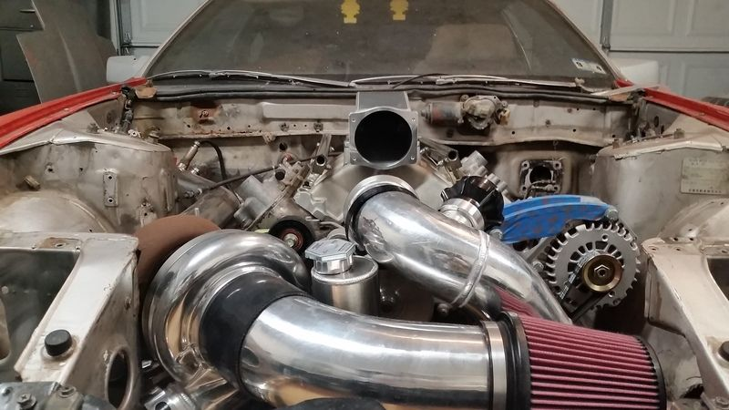
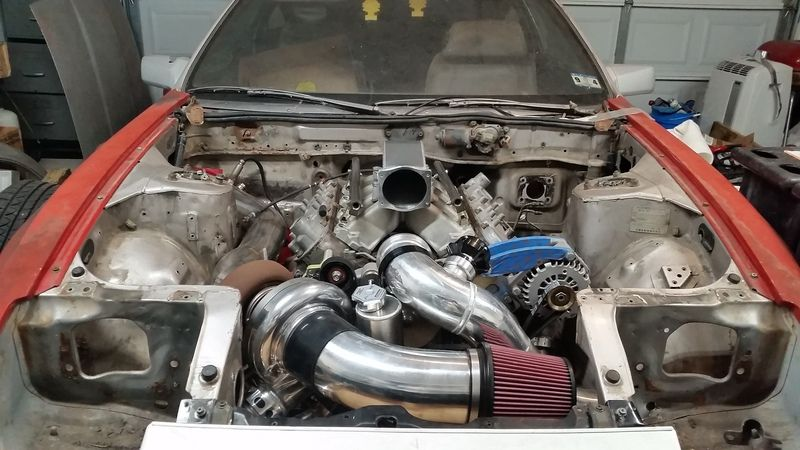
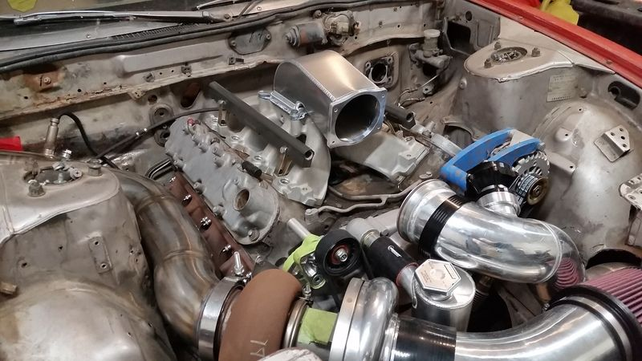
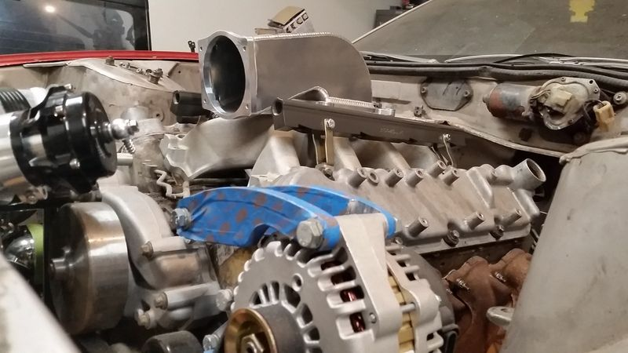
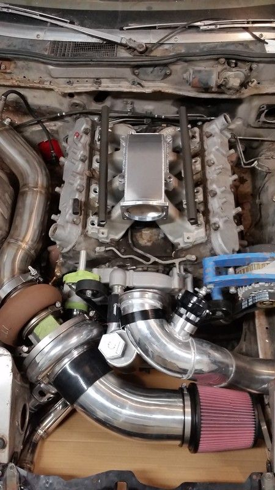
Here's pics showing the contact between the Aarons elbow and the factory Z31 hood.
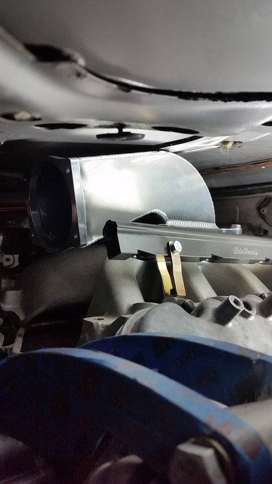
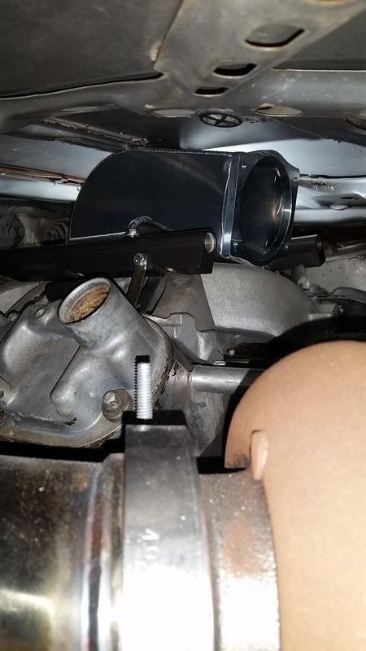
These 2 pics shows the 13/16in gap between the hood and fender.
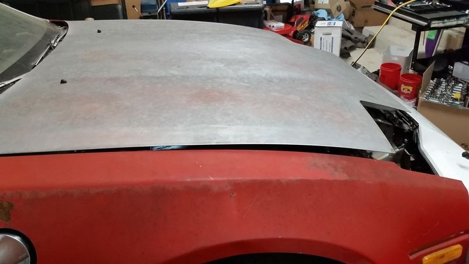
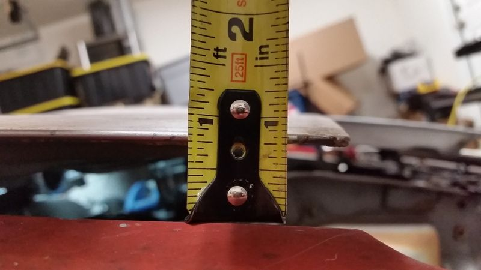
I marked where the Aarons elbow contacts the hood with blue painters tape.
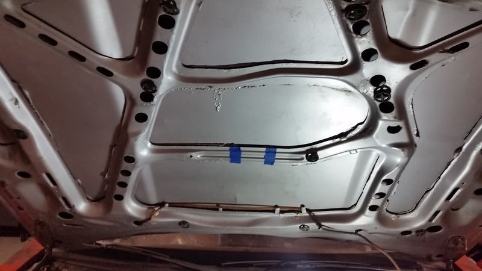
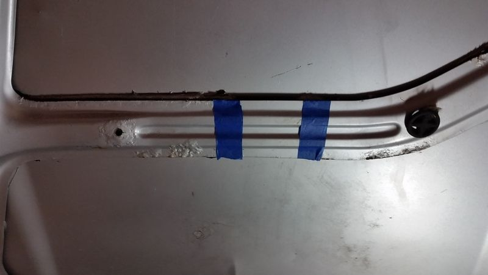Originally posted by Racinjitter -
Good stuff - useful info & pics to boot. It also looks like trimming the hood skeleton in that one spot might take care of the clearance issues.
Now I wonder if a Holley Mid-rise (or even High-rise) EFI intake would fit under the hood.'86 300ZXT GLL
'78 Datsun 280Z BP
'11 Saab 9-3 Aero XWD -
nice work keep it up -
I know the Holley single plane is a little shorter. Which may make up a good chunk of the clearance issues. Here's some comparison pics of Holley single plane and Edelbrock Vic Jr. I found on ls1tech.
single plane vs vic jr.jpgsingle plane vs vic jr.jpgsingle plane vs vic jr.jpgsingle plane vs vic jr.jpgOriginally posted by Racinjitter -
Thanks Pace.Originally posted by Pace
Unfortunately the Holley mid rise & high rise a much taller units. I like the look of the Holley high rise. I'd look a Z31 version of Bane if I was to run the Holley high rise lol.
Thank you vqpower.Originally posted by vgpower View PostOriginally posted by Racinjitter -
Hey just going through your thread. I'm doing a carb ls swap into my z31. Do you think it would clear? -
I don't think a carb would clear the factory hood without modification. I'm @ work right now but, I'll measure the elbow to see how it's height would compare to a carburetor. I'll probably be home in about 14 Hrs.Originally posted by Racinjitter -
Alright I just got home from work. From the base of the elbow to the tallest point it measured 4 3/8 in tall. Hope that helps you with your selection.Aarons elbow measurement (2).jpgOriginally posted by Racinjitter -
Ok so looks like I'm in luck. The holley 650 double pumper measure 3 1/4 inch from base to the highest point. And with a edelbrock rpm ls1 intake, it should work, awesome thanks for all the help. I followed your entire ls build and it's helped me a lot. The last question I have is did you need to change the differential and axles to handle the extra torque the car will be making, and what is the car making now -
Thanks for kind words. The factory components are ok as long at your not going to the track trying to get a 1.1 60ft. Flawlez is on all stock drivetrain and hadn't broken anything but, his car rarely sees the track. It's mostly street driven. I'm doing the s13 subframe swap. If your doing the same suprakar is running the Q45 diff setup. His car makes over 800hp on all factory components. That doesn't mean it'll last forever but shows it can survive.Originally posted by Racinjitter -
Alright I have an open dif so it may be a different story. I'll be swapping to lsd soon. The car will hopefully make just around 500 ft/ lbs of torque. So no crazy 60 foot time at the drag strip. Know anyone selling an lsd? -
When this was taken Flawlez was on open diff. He has since switched differentials but, the open is still intact & operational.Originally posted by cjz31 View Post
https://www.youtube.com/watch?v=iJa5qr4RIIMOriginally posted by Racinjitter

Copyright © 2006–. All rights reserved. Privacy Policy